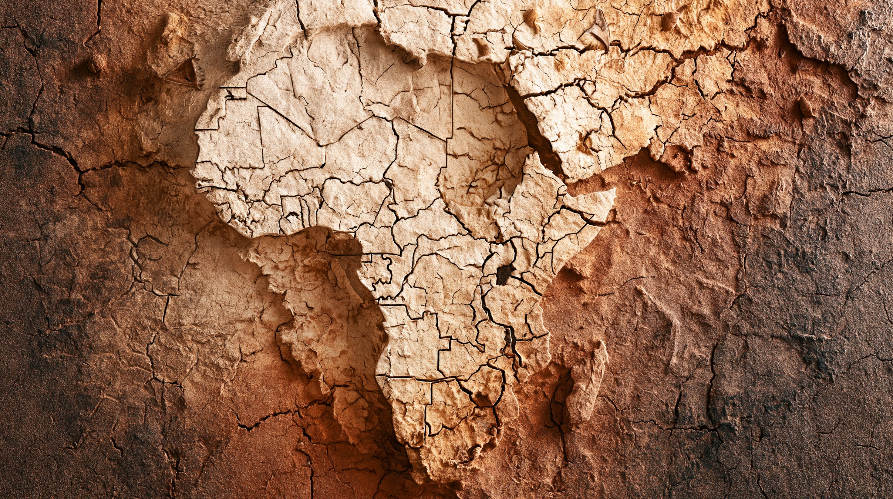
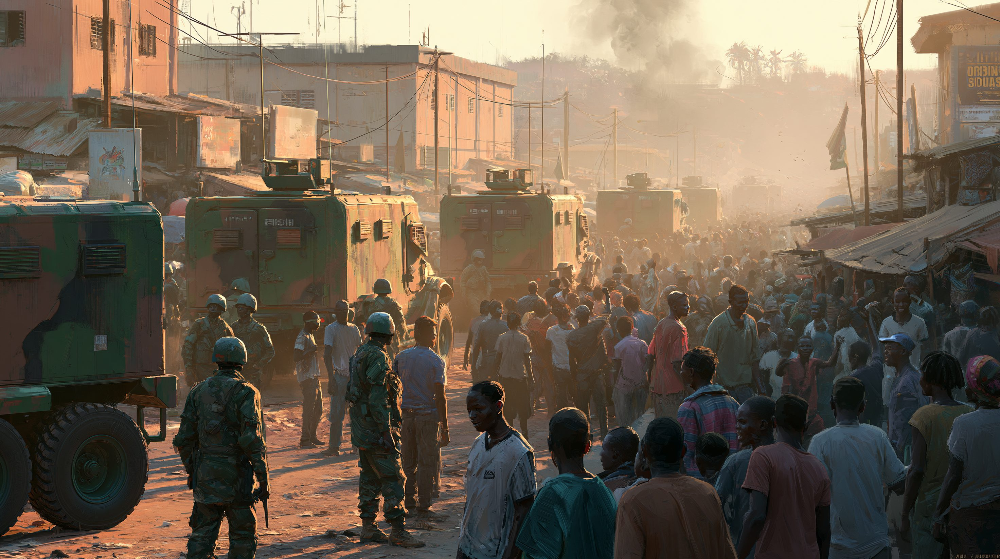
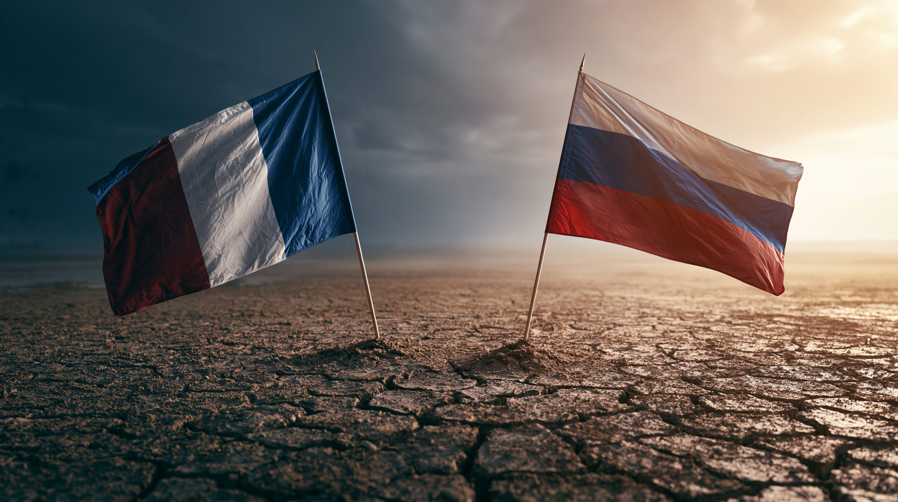
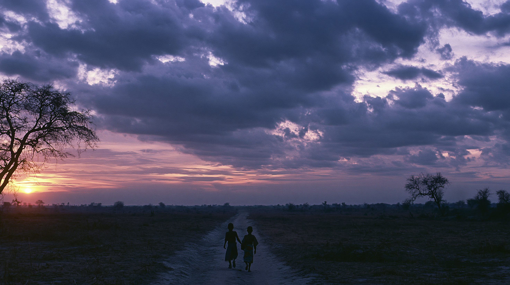

01核心と問い — なぜサヘルで崩壊が連鎖するのか
サヘルとは、サハラ砂漠の南縁に東西に広がる半乾燥地帯を指す。マリ、ブルキナファソ、ニジェール、チャドなどが含まれ、その多くはフランスの旧植民地だ。本稿では主に、武装勢力の脅威が集中する中央サヘル3カ国——マリ・ブルキナファソ・ニジェール——を対象とし、必要に応じて周辺の政変にも触れる。この3カ国では2020〜2023年に計5度の軍事クーデターが起きた。マリで2回（2020年・2021年）、ブルキナファソで2回（いずれも2022年）、ニジェールで1回（2023年）。同じ時期に周辺のチャド（2021年）やギニア（2021年）でも政変が起き、サヘル・西アフリカ一帯で軍政化の流れが広がった。わずか数年でこれだけの政変が連鎖した密度は、世界的にも異例だ。
その背景には3つの構造的要因が絡み合っている。イスラム武装勢力の台頭で疲弊した軍と政府、独立後も続いたフランスの政治・経済的影響力（いわゆる「フランサフリック」）への反感、そしてソーシャルメディアを通じて拡散する反欧米感情の燃料だ。クーデターはそれぞれ独立した事件に見えるが、根にある構造は同じだ。そして、フランスの撤退というかたちで表れた「西側の退場」の後に入り込んだのが、ロシア系民間軍事会社のワグネルだった。なお本稿が見出しで「新植民地」と表現するのは、①安全保障を外部勢力に依存し、②資源・権益や外交的立場を見返りに差し出し、③現地住民の安全よりも外部勢力と軍政の利益が優先される——という構図を指す。善悪のレッテルではなく、依存の構造を問うための言葉だ。
フランスと旧植民地アフリカ諸国との間に続く、非公式の政治・経済・軍事的つながりを指す造語。フランスが有利な採掘権や貿易条件を確保する代わりに、現地政権を財政・軍事的に支援するという「もたれ合い」の構造が独立後も続いてきた。この構造への批判が、クーデターへの大衆的な支持の底流にある。

02タイムライン — 崩壊の連鎖
マリの分裂とフランスの介入
マリ北部でトゥアレグ族の反乱とイスラム武装勢力が台頭し、マリ軍が崩壊寸前に陥った。フランスはセルヴァル作戦を発動して介入し、北部を奪還。この成功体験がサヘル常駐化の起点となった。
バルカン作戦の開始
フランスはサヘル5カ国（マリ・ブルキナファソ・ニジェール・チャド・モーリタニア）を対象に、常設の対テロ作戦「バルカン作戦」を開始した。最大5,500人規模で展開し、サヘルにおけるフランスの軍事プレゼンスが恒常化した。
マリで2度のクーデター — ワグネルの扉が開く
武装勢力の拡大を止められない文民政府への不満が爆発し、マリで2回のクーデターが起きた。ゴイタ大佐が実権を掌握した軍政は、フランスとの関係を冷却させながら、ロシア系民間軍事会社ワグネルとの接触を開始した。
フランスの撤退とブルキナファソの二重政変
マリの軍政がフランス大使を追放し、フランスはバルカン作戦のマリ部分を終了した。8月に撤退完了、11月に作戦終結を宣言。同年ブルキナファソでは1月と9月に2度のクーデターが起き、2カ国が続けて反仏・親ロシア路線に転換した。
ニジェールのクーデター — 最後のドミノ
大統領警護隊のチアニ将軍がバズム大統領を拘束し権力を掌握した。西側が「安定のとりで」と頼りにしていたニジェールの失陥は衝撃を広げた。西アフリカ諸国経済共同体（ECOWAS）が制裁と軍事介入を示唆したが、実行されなかった。
AES設立とECOWAS離脱
マリ・ブルキナファソ・ニジェールの3軍政が「リプタコ＝グルマ憲章」に署名し、サヘル同盟（AES：Alliance des États du Sahel）を発足させた。2024年1月にはECOWASからの正式脱退を宣言し、地域の多国間枠組みから離脱した。
ワグネルからアフリカ軍団へ — 拡大と限界
2024年にワグネルはロシア国防省直轄の「アフリカ軍団」へ改編された。ブルキナファソとニジェールへも展開が進んだが、テロ被害は減らず。2025年5月にはブルキナファソで約200人の軍人が死亡する攻撃が発生。同年6月、ワグネル後継はマリでの「任務完了」を宣言し、事実上の縮小・再編に転じた。

036つの視点
| 立場 | 基本スタンス | 最大の主張 | 課題・矛盾 |
|---|---|---|---|
| フランス | 撤退した旧宗主国 | 9年間の作戦で戦果を上げた | 成果が現地に届かなかった |
| ロシア／アフリカ軍団 | 条件なしの支援者 | 反欧米感情を取り込み進出 | 暴力を減らせず人権侵害も |
| サヘル軍政 | 主権回復の旗手 | 植民地的依存から脱却した | 選挙なし・正統性が脆弱 |
| 地域住民 | 期待と幻滅の間 | 本物の独立と安全を求める | どの勢力も暴力を止められず |
| 中国 | 静観する経済大国 | 軍事コストなしで影響力拡大 | 不安定化のリスクは抱える |
| 欧州連合・西側 | 価値観と利益の板挟み | 民主化・人権を要求したい | 制裁も介入も機能しない |

04データ・統計
サヘルのイスラム過激派関連死者数（2019〜2023年）
クーデター前後で暴力は増加の一途。2020年〜2023年のわずか3年で約3倍に達した。フランス撤退後もロシア参入後も、数字は改善していない。出典：ACLED、Global Terrorism Index
2023年 サヘル中央部 国別テロ死者数（概数）
2023年のサヘル中央部の死者約1万1,643人のうち、ブルキナファソが約3分の2を占める。マリ・ニジェールの内訳は残余からの概算値。世界のテロ死者に占めるサヘルの割合は、GTI2023で約43%、CFRの整理では2024年に約51%へ上昇した。出典：ACLED、Global Terrorism Index、CFR
注目の数字
中央サヘル3カ国のクーデター一覧（2020〜2023年・計5回）
| 年月 | 国 | 主要人物 |
|---|---|---|
| 2020年8月 | マリ | ゴイタ大佐ら（CNSP、IBK政権を打倒） |
| 2021年5月 | マリ | ゴイタ大佐（移行政権を掌握し実権を握る） |
| 2022年1月 | ブルキナファソ | ダミバ中佐（カボレ大統領を追放） |
| 2022年9月 | ブルキナファソ | トラオレ大尉（ダミバを追放） |
| 2023年7月 | ニジェール | チアニ将軍（バズム大統領を拘束） |
05深掘り — 構造の先に何があるか
